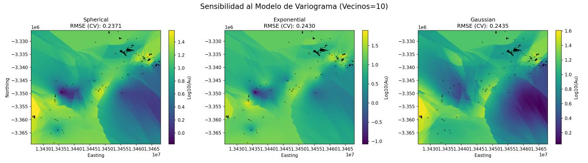
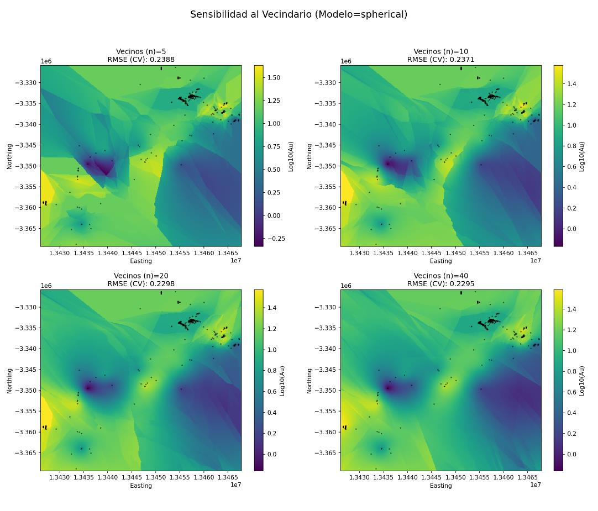

Capítulo 8 · modelos ±0,006 RMSE · vecinos ±0,009
Las perillas que no importaron
Esférico 0,2371 / exponencial 0,2430 / gaussiano 0,2435; n=5→0,2388 … n=40→0,2295. Que las perillas muevan tan poco ES el hallazgo: la restricción real son las 425 muestras.
Se cambió el modelo de variograma y el error de validación se movió 6 milésimas. Se cambió el número de vecinos de 5 a 40 y se movió 9 milésimas. Sobre un error de 0,230, eso es casi nada, y que sea casi nada es el hallazgo de este capítulo: las perillas del kriging no son donde vive el error de este depósito.
En este capítulo: qué es una prueba de sensibilidad, la perilla del modelo, la perilla del vecindario, la reconciliación con el capítulo 6, y la lectura que importa.
Qué es una prueba de sensibilidad
Se toma una decisión del flujo, se cambia solo esa, se deja todo lo demás igual y se mide la misma vara de siempre: el RMSE de validación cruzada, la raíz del error cuadrático medio al estimar cada muestra sin ella, en unidades de log10. Si la vara apenas se mueve, la decisión no importaba; si se mueve mucho, ahí había una perilla de verdad. Las dos pruebas se hicieron con kriging ordinario, vecindario móvil y el variograma experimental de 240 m del capítulo 6.
Perilla 1: el modelo de variograma
Los tres modelos del capítulo 6 se ajustaron a los mismos puntos experimentales y cada uno se usó para krigear con 10 vecinos:
- Esférico: RMSE 0,2371.
- Exponencial: RMSE 0,2430.
- Gaussiano: RMSE 0,2435.

Los tres mapas son casi el mismo mapa: las zonas de alta ley y de baja ley caen en los mismos sitios, y lo que cambia es la suavidad con la que se pasa de una a otra, reflejo de las funciones de peso ligeramente distintas que implica cada forma. La diferencia máxima de RMSE es de 0,0064, un 2,8 % del error total.
La reconciliación con el capítulo 6
Aquí hay una tensión que conviene decir en voz alta. En el capítulo 6 ganó el gaussiano, por ajustarse mejor a los puntos experimentales (error de ajuste 0,0125 frente a 0,0129 del esférico). En esta prueba gana el esférico, por predecir mejor muestras que no ha visto (0,2371 frente a 0,2435). No es una contradicción: son dos preguntas distintas. Ajustar una curva mide cuánto se parece el modelo a los puntos del variograma; validar mide cuánto acierta el kriging que sale de ese modelo. Un modelo puede calcar mejor los puntos y estimar un pelo peor.
Perilla 2: el vecindario
Con el esférico fijo, se repitió el kriging con un máximo de 5, 10, 20 y 40 vecinos por punto, con la misma elipse de búsqueda y la misma orientación, de modo que solo cambiara el número:
- n = 5: RMSE 0,2388.
- n = 10: RMSE 0,2371.
- n = 20: RMSE 0,2298.
- n = 40: RMSE 0,2295.

Con 5 vecinos, la superficie muestra más variabilidad local y transiciones más bruscas: pocos puntos mandan en cada estimación, así que cada muestra pesa mucho y los cambios de conjunto de vecinos dejan facetas visibles. Al subir a 10, 20 y 40 la superficie se alisa y los patrones se vuelven más continuos. Es lo esperado: más vecinos es más soporte y más promedio, lo que reduce la varianza local pero puede borrar variabilidad real a corta escala, el sesgo condicional del que se habló en el capítulo anterior.
El RMSE refleja ese canje: baja de 0,2388 a 0,2371 al pasar de 5 a 10, sigue bajando hasta 0,2298 con 20, y con 40 apenas llega a 0,2295. Casi toda la mejora está en el paso de vecindarios muy pequeños a uno moderado; a partir de 20, rendimientos decrecientes. Para este archivo el equilibrio está entre 10 y 20 vecinos: estimaciones estables sin alisar de más. Los mapas de los capítulos anteriores usan 10.
La lectura que importa
Pon las dos pruebas una al lado de la otra. El modelo mueve el RMSE 0,0064. El vecindario, de 5 a 40, lo mueve 0,0093. El RMSE se queda en 0,23 hagas lo que hagas, que en ppb es un factor de 1,70 típico entre lo estimado y lo real. Ninguna perilla baja el error de forma apreciable porque el error no está en las perillas: está en las 425 muestras con oro medible repartidas en 62.000 km², en la anisotropía que el modelo omnidireccional no recoge, y en el suavizado que todo kriging lineal lleva dentro.
Ese es el resultado útil de este capítulo. No dice «el esférico con 20 vecinos»; dice que la siguiente mejora real de este mapa no saldrá de ajustar el kriging, sino de más muestras donde la varianza es alta, o de métodos que usen otra información, que es de lo que trata el capítulo final.
Lo que queda establecido
Modelos y vecindarios se probaron y apenas movieron la vara: 6 y 9 milésimas sobre 0,230. El mapa es tan bueno como lo dejan sus 425 muestras, y el último capítulo dice para qué sirve y para qué no.